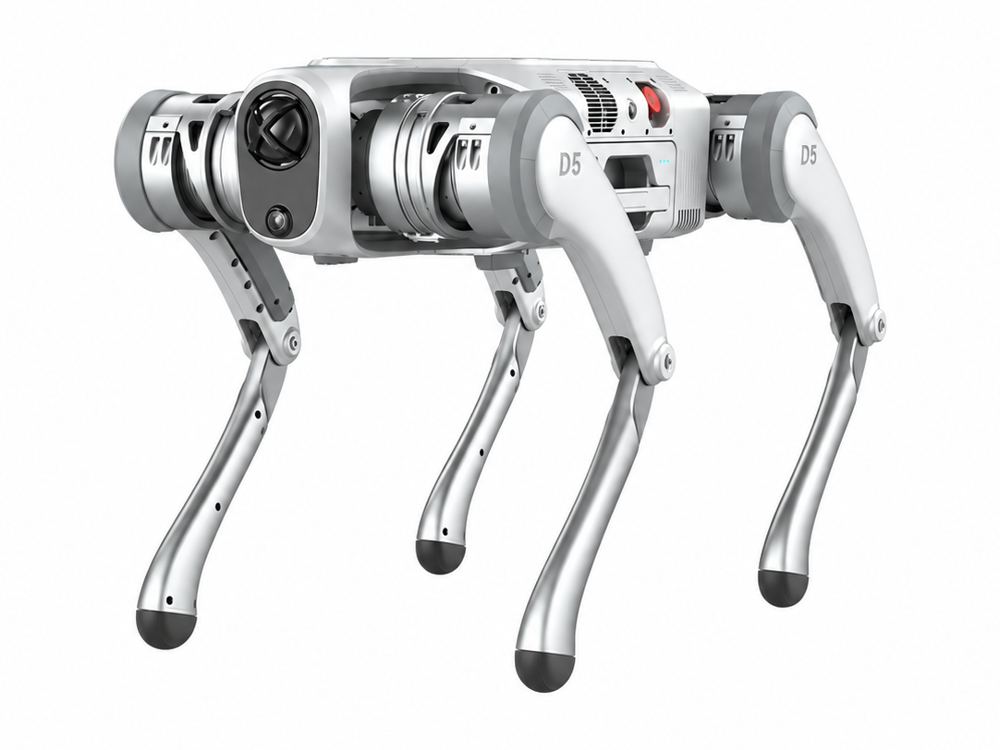
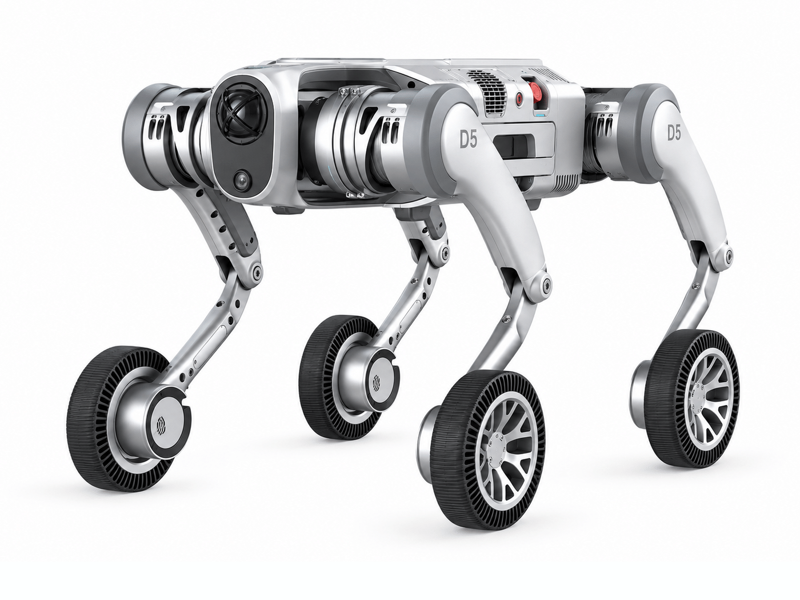
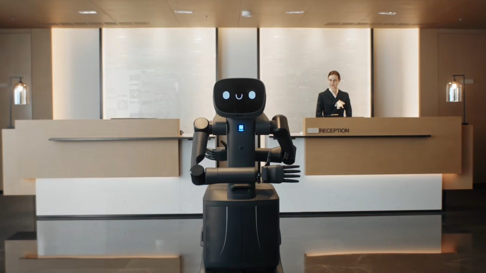

Pudu Robotics
6 models
2 quadrupeds
Year, newest first

3 humanoids
Year, newest first


1 robot AI model
Year, newest first

Robot photos are the manufacturers’ own.
May we measure visits with Google Analytics? It sets no cookies until you accept.
Year, newest first
Year, newest first
Year, newest first

Robot photos are the manufacturers’ own.